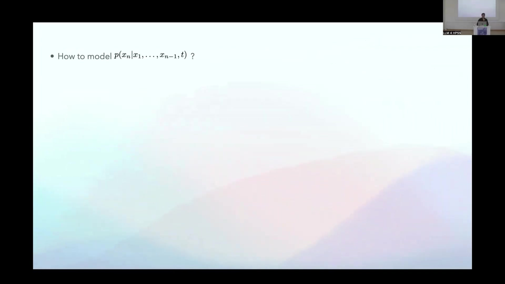

15 Time-Aware Language Models
Overview
Researchers at the Max Planck Institute of Geoanthropology propose a novel architecture, termed the “Time Transformer”, designed to imbue Large Language Models (LLMs) with explicit time-awareness. This work addresses a critical limitation: current LLMs possess only an implicit, statistically derived understanding of time, hindering their capacity to accurately process temporally evolving information, particularly for historical analysis. The core innovation involves augmenting standard Transformer models by incorporating a dedicated temporal dimension into token embeddings, thereby explicitly encoding the utterance time for each token.
A proof-of-concept study utilised a small generative LLM, trained on a corpus of Met Office weather reports spanning 2018 to 2024. For this experiment, the temporal dimension represented the min-max normalised day of the year. The Time Transformer demonstrated its capability to learn and reproduce both synthetically introduced temporal drifts in language patterns—such as synonym replacement and alterations in word co-occurrence—and naturally occurring seasonal variations within the weather data. Key components of this investigation comprised the baseline vanilla Transformer model, its Time Transformer modification, and the curated dataset of weather reports. Development and training relied on standard LLM frameworks and an HPC cluster equipped with NVIDIA A100 GPUs. Potential applications extend beyond historical analysis to include the creation of foundation models for diverse time-sensitive tasks, enabling interactions with specific temporal contexts, and possibly modelling other contextual metadata dimensions like geography or genre. Nevertheless, this approach necessitates training models from scratch, presents challenges in curating temporal metadata, and raises questions regarding the feasibility of fine-tuning existing models.
15.1 The Temporal Deficit in Current Language Models

Jochen Büttner, from the Max Planck Institute of Geoanthropology, introduced a foundational concept aimed at enhancing language models. His presentation formalised an idea with potential applications in historical analysis (HPSS), though the speaker acknowledged its basic nature and solicited information regarding any pre-existing similar work.
Researchers argued that current Large Language Models operate with merely an implicit comprehension of time, a comprehension statistically distilled from the vast quantities of text encountered during training. Whilst these models demonstrate a considerable, albeit indirect, grasp of temporal concepts, explicit time-awareness promises significant benefits, particularly for historical analysis and potentially broader applications. Consider, for instance, two statements: “The primary architectures for processing text through NNs are LSTMs,” accurate around 2017, and “The primary architectures for processing text through NNs are Transformers,” pertinent circa 2025. Humans effortlessly resolve the apparent contradiction by understanding the different temporal contexts. However, within an LLM’s training data, which lacks explicit temporal markers, these statements directly compete, compelling the model towards an unavoidable error in at least one instance.
Consequently, during inference, an LLM prompted with “The primary architectures for processing text through NNs are” will likely predict “Transformers,” influenced by an inherent recency bias from its training. Eliciting an older truth, such as “LSTMs,” often necessitates careful prompt engineering—perhaps by adding “In 2017” or altering verb tenses—a process researchers describe as somewhat haphazard. The central objective, therefore, involves engineering explicitly time-aware LLMs, empowering them to learn and reproduce evolving patterns within training data as a direct function of time.
Formally, standard LLMs estimate the probability of a subsequent token given a sequence of preceding tokens, denoted p(xn | x1, …, xn-1). In reality, this probability remains non-static; it dynamically changes with time, correctly represented as p(xn | x1, …, xn-1, t). For instance, the likelihood of “Transformers” completing the aforementioned sentence in 2017 was effectively zero. One can express the probability of an entire token sequence uttered at a specific time t as the product of these conditional probabilities: p(x1, x2, …, xn | t) = Πk=1 to n p(xk | x1, …, xk-1, t). Current models can only mirror temporal shifts in these underlying distributions through in-context learning during inference, a less direct mechanism.
15.2 Architecting Time-Awareness: The Time Transformer

Addressing the challenge of modelling the time-dependent probability distribution p(xn | x1, …, xn-1, t) necessitated a novel approach. One existing strategy, time slicing, involves training distinct models for separate temporal segments, assuming distributions remain relatively static within each slice. However, this technique proves exceptionally data-inefficient.
Consequently, researchers conceived the “Time Transformer”, an architecture distinguished by its elegant simplicity. Standard Natural Language Processing tasks commence by transforming words or tokens into vectorial representations—embeddings—which models refine during training. The Time Transformer innovates by appending an additional dimension to these latent semantic token features, specifically encoding the token’s origin time. Thus, every token in a sequence, uttered at a particular time, receives this explicit temporal information. For instance, the representation for “cat” would subtly differ in this dimension depending on whether it was uttered recently or several years prior.
One can formalise this time-aware embedding as E(x, t) = {e1(x), e2(x), …, ed-1(x), φ(t)}, where φ(t) represents the encoded time. The Transformer model then processes a sequence of these augmented embeddings, [E(x1, t), E(x2, t), …, E(xn-1, t)], to predict the time-conditioned probability pθ(xn | x1, …, xn-1, t). The training objective remains the minimisation of the negative log likelihood across the dataset: minθ - Σi=1 to N Σk=1 to n(i) log pθ(xk(i) | x1(i), …, xk-1(i), t(i)). Through this mechanism, temporal information directly ‘injects’ into every token’s representation, enabling the model to learn precisely how significantly the time dimension influences each individual token.
15.3 Empirical Validation: Experimental Design and Implementation

To validate the Time Transformer concept, researchers required a dataset characterised by a limited vocabulary and simple, repetitive language, thereby facilitating the training of a small generative LLM. Met Office weather reports from the UK’s National Meteorological Service, accessible via their digital archive (https://digital.nmla.metoffice.gov.uk/), fulfilled these criteria admirably. Researchers scraped data spanning 2018 to 2024, yielding approximately 2,500 reports, each comprising around 150-200 words. They also noted an alternative dataset, TinyStories. Preprocessing involved extracting daily reports from monthly PDFs and applying a straightforward tokenisation strategy: no sub-word units, and a disregard for case and interpunctuation. This yielded a modest vocabulary of 3,395 unique words.
Researchers first constructed a baseline ‘vanilla’ Transformer model. This decoder-only architecture comprised an embedding layer, positional encoding, and dropout, followed by four decoder blocks—each containing multi-head attention (with eight heads), residual connections with layer normalisation, and a feed-forward network—culminating in a final dense layer for output probability distribution. This relatively small model, with 39 million parameters (150MB), contrasts sharply with models such as GPT-4 (1.8 trillion parameters). Training occurred on an HPC cluster in Munich, utilising two NVIDIA A100 GPUs, achieving a rapid 11 seconds per epoch owing to the dataset’s and model’s compactness. The associated code is available on GitHub (j-buettner/time_transformer), though primarily serving as a learning tool. This vanilla model demonstrated proficiency in replicating the language of the weather reports.
Transitioning to the Time Transformer involved a minimal architectural adjustment. Instead of a standard embedding, researchers incorporated time data by reserving one dimension within the, for example, 512-dimensional latent semantic space for a temporal signal. They concatenated this time value with the token’s semantic embedding before positional encoding. Specifically, a non-trainable, min-max normalised day of the year (calculated as (day of year - 1) / 364) served as the time embedding, a choice made to exploit natural seasonal variations in weather patterns. Researchers acknowledged that alternative methods for encoding time could also be employed.
15.4 Learning Temporal Dynamics: Experimental Outcomes

The primary inquiry guiding these experiments sought to determine whether the Time Transformer could efficiently learn temporal drift within the underlying data distribution. A first experiment, termed “synonymic succession,” involved injecting a synthetic temporal drift. Researchers implemented a time-dependent replacement of the word “rain” with “liquid sunshine,” where the probability of replacement followed a sigmoid function across the days of the year—commencing at zero and culminating at one by year’s end. By generating a weather prediction for each day and analysing the monthly frequencies of these terms, they found the model accurately reproduced this injected pattern: “rain” predominated early in the year, whilst “liquid sunshine” emerged towards the end, with a clear mid-year transition, all subject to expected statistical fluctuations.
Beyond synthetic changes, the model also captured naturally occurring seasonal patterns, such as the increased frequency of terms like “snow” and “sleet” in winter months, and “hot” or “warm” in summer. However, researchers viewed these as simpler instances of temporal influence, primarily affecting word frequencies. To explore a more complex scenario, a second experiment focused on altering a co-occurrence pattern, which they described as the “fixation of a collocation.” Here, they synthetically replaced instances of “rain” not immediately followed by “and” with “rain and snow” in a time-dependent manner. This aimed to render “rain and snow” an obligatory pairing by the year’s end, akin to how “bread and butter” functions as a fixed phrase. Again, analysis of daily predictions across the year confirmed the model’s success: towards the year’s end, predictions almost exclusively featured “rain and snow,” whilst earlier in the year, “rain” could appear alone—though “rain and snow” also occurred, reflecting genuine meteorological conditions for periods like January.
Investigations into the model’s internal workings, specifically its attention mechanisms (using techniques alluded to as ‘excite’), revealed that certain attention heads had specialised in capturing these temporal dependencies. For instance, the attention paid from “snow” back to “rain” (when generating “rain and snow”) varied appropriately with the time of year. Furthermore, early-year co-occurrences of “rain and snow” often correctly conditioned on contextual cues like “cold system,” underscoring the model’s ability to learn nuanced patterns. These findings collectively provided a proof of concept: Transformer-based LLMs can indeed be rendered efficiently time-aware through the simple addition of a temporal dimension to their token embeddings.
15.5 Broader Implications and Future Trajectories

The successful proof of concept for the Time Transformer opens several avenues for application and further research. A foundational Time Transformer could provide a robust basis for numerous downstream tasks reliant on historical data. Furthermore, an instruction-tuned version might enable users to interact with information as it existed at a specific point in time, potentially even enhancing present-focused interactions by providing a richer temporal context. This architectural principle could, moreover, extend to model dependencies on other metadata dimensions, such as geographical origin or textual genre.
Regarding future work, researchers identified several promising directions. Benchmarking the Time Transformer against approaches that treat time as an explicit token within the input sequence would prove valuable. Another important investigation involves testing whether the inclusion of an explicit temporal dimension enhances training efficiency; the hypothesis posits that it could aid the model in more readily deciphering complex temporal patterns that are otherwise only implicitly cued.
Nevertheless, translating this concept into widespread practical application faces notable challenges. The architectural modification—the addition of a temporal dimension to embeddings—raises questions about the feasibility and efficiency of fine-tuning existing pre-trained models; indeed, it may necessitate training new models from scratch. This, in turn, implies significant computational costs for any application beyond the small-scale demonstration. A crucial shift from current practices involves the loss of metadata-free self-supervised learning; the Time Transformer requires meticulous data curation to assign a temporal marker to every token sequence. For historians, accurately determining the ‘generation date’ of textual material can prove complex, involving considerations of original utterance, reprints, and publication lags.
As a concluding reflection, the presenter suggested that a more modest, targeted encoder model, akin to BERT, built upon the same time-aware principle, might offer a pragmatic path for specific tasks that do not require full generative capabilities. Such a model could focus on learning relevant temporal patterns without the overhead of modelling all linguistic intricacies. Collaboration on exploring these targeted applications is welcomed.